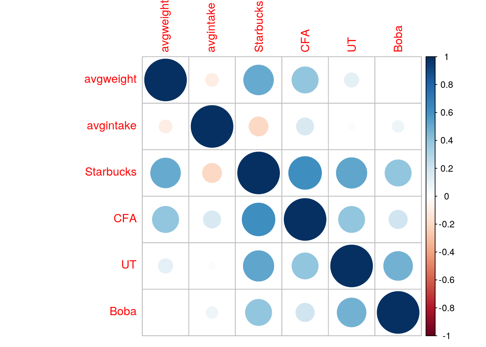
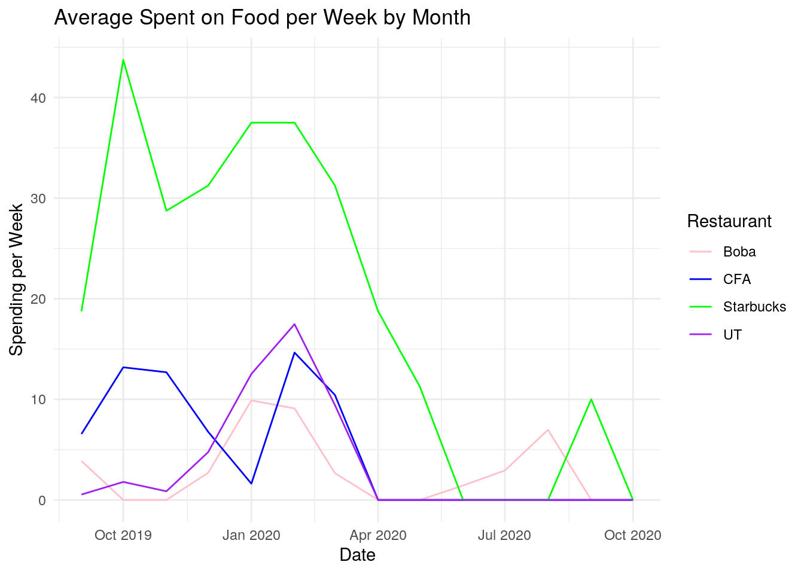
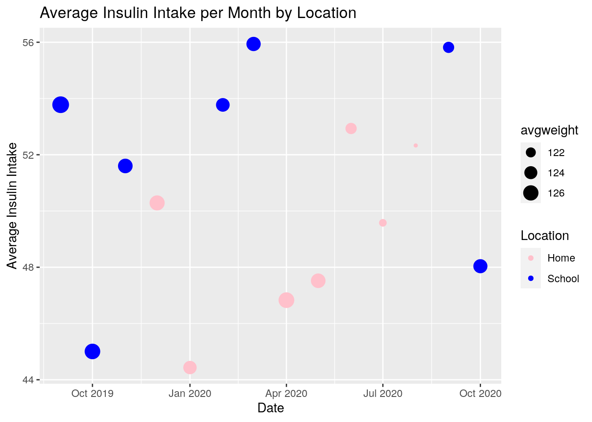
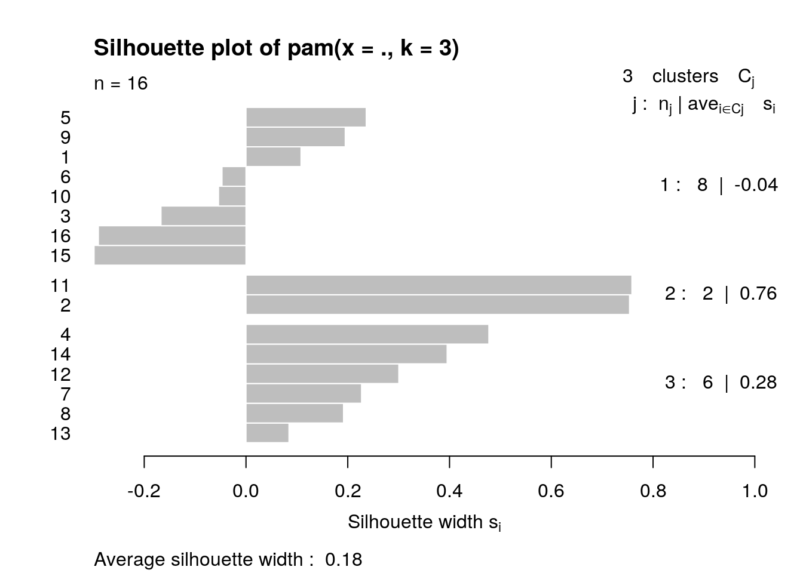
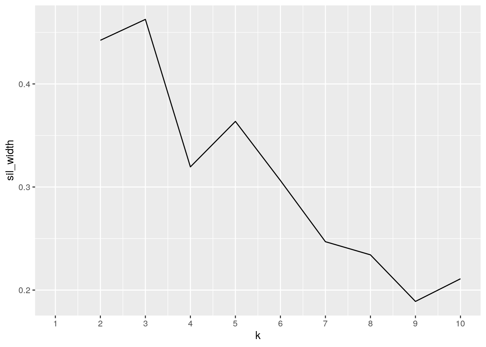
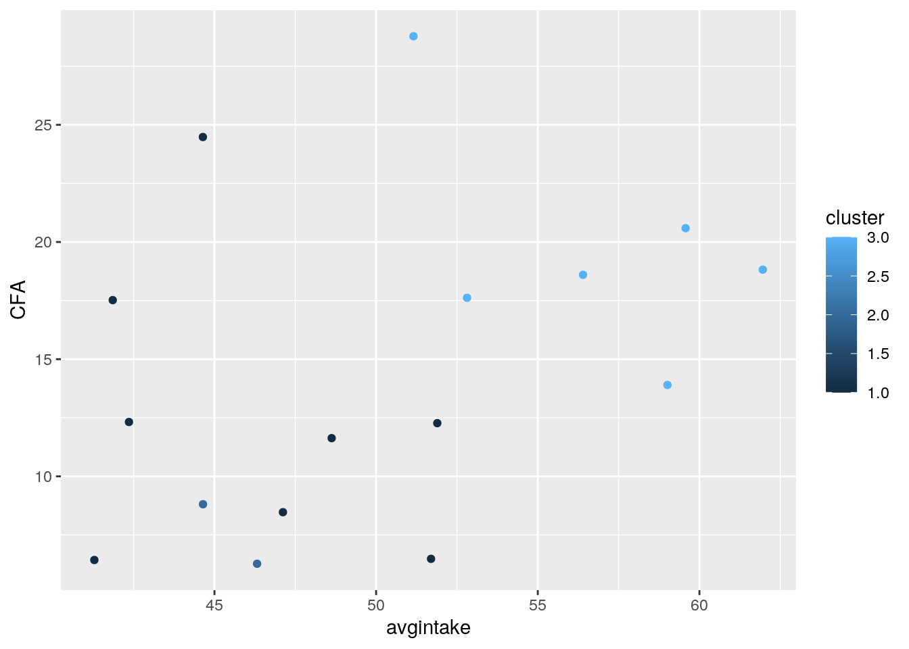

January 1, 0001
0. Introduction
1. Tidying: Cleaning and Rearranging Data
options(pillar.sigfig = 6)
# using packages that will be needed
library(tidyverse)
library(dplyr)
library(tidyr)
library(ggplot2)
library(readxl)
# read in all data sets
January2020_0443 <- read_csv("January2020_0443.csv")
February2020_0443 <- read_csv("February2020_0443.csv")
March2020_0443 <- read_csv("March2020_0443.csv")
April2020_0443 <- read_csv("April2020_0443.csv")
May2020_0443 <- read_csv("May2020_0443.csv")
June2020_0443 <- read_csv("June2020_0443.csv")
July2020_0443 <- read_csv("July2020_0443.csv")
August2020_0443 <- read_csv("August2020_0443.csv")
September2020_0443 <- read_csv("September2020_0443.csv")
October2019_0443 <- read_csv("October2019_0443.csv")
November2019_0443 <- read_csv("November2019_0443.csv")
December2019_0443 <- read_csv("December2019_0443.csv")
FITINDEX_Jules <- read_csv("FITINDEX-Jules.csv")
total_insulin <- read_excel("total insulin.xlsx")
# compiling data from my credit card transactions
originalmoneydata <- rbind(January2020_0443, February2020_0443,
March2020_0443, April2020_0443, May2020_0443, June2020_0443,
July2020_0443, August2020_0443, September2020_0443, October2019_0443,
November2019_0443, December2019_0443)
moneydata <- originalmoneydata %>% separate(`Posted Date`, into = c("Month",
"Day", "Year"))
# filtering out money that is added to my card
moneydata <- moneydata %>% filter(Amount < 0)
# Changing food names into groups for better readability and
# consistency
moneydata$Payee[moneydata$Payee == "STARBUCKS 800-782-7282 WA" |
moneydata$Payee == "STARBUCKS 800-782-7282 800-782-7282 WA"] <- "Starbucks"
moneydata$Payee[moneydata$Payee == "ARAMARK SAC CFA AUSTIN TX"] <- "CFA"
moneydata$Payee[moneydata$Payee == "ARAMARK CHICK FIL A AUSTIN TX"] <- "CFA"
moneydata$Payee[moneydata$Payee == "UT H&F FOOD SERVICE AUSTIN TX"] <- "UT"
moneydata$Payee[moneydata$Payee == "KFTEAUSA_31 AUSTIN TX" |
moneydata$Payee == "SQ *TAPIOCA HOUSE. Austin TX" | moneydata$Payee ==
"CAFE MOZART BAKERY CARROLLTON TX" | moneydata$Payee == "GONG CHA. AUSTIN TX" |
moneydata$Payee == "SQ *SQ *GONG CHA - DOB Austin TX" | moneydata$Payee ==
"7 LEAVES FRISCO FRISCO TX" | moneydata$Payee == "TST* FAT STRAWS 1 - PL PLANO TX" |
moneydata$Payee == "SQ *SQ *THE NEST Frisco TX " | moneydata$Payee ==
"SQ *SQ *TAPIOCA HOUSE" | moneydata$Payee == "Austin TX BOBA LATTE FRISCO FRISCO TX"] <- "Boba"
# selecting for top food places I've spent the most money for
moneydata <- moneydata %>% filter(Payee == "Starbucks" | Payee ==
"CFA" | Payee == "UT" | Payee == "Boba")
# tidying data; pivot to wide
moneydata <- moneydata %>% pivot_wider(names_from = Payee, values_from = Amount)
moneydata[is.na(moneydata)] = 0
# replace month to names
moneydata$Month[moneydata$Month == "01"] <- "Jan"
moneydata$Month[moneydata$Month == "02"] <- "Feb"
moneydata$Month[moneydata$Month == "03"] <- "Mar"
moneydata$Month[moneydata$Month == "04"] <- "Apr"
moneydata$Month[moneydata$Month == "05"] <- "May"
moneydata$Month[moneydata$Month == "06"] <- "Jun"
moneydata$Month[moneydata$Month == "07"] <- "Jul"
moneydata$Month[moneydata$Month == "08"] <- "Aug"
moneydata$Month[moneydata$Month == "09"] <- "Sep"
moneydata$Month[moneydata$Month == "10"] <- "Oct"
moneydata$Month[moneydata$Month == "11"] <- "Nov"
moneydata$Month[moneydata$Month == "12"] <- "Dec"
# total monthly spending on favorite foods into new dataframe
moneyweek <- moneydata %>% select(Month, Day, Year, Starbucks,
CFA, UT, Boba)
# mutate; adding column to assign week number to dates
moneyweek$Day <- as.numeric(as.character(moneyweek$Day))
moneyweek <- mutate(moneyweek, Week = ifelse(Day %in% 1:8, 1,
ifelse(Day %in% 9:16, 2, ifelse(Day %in% 17:23, 3, 4))))
moneyweek <- moneyweek %>% group_by(Month, Week, Year) %>% summarise(Starbucks = sum(Starbucks),
CFA = sum(CFA), UT = sum(UT), Boba = sum(Boba))First thing I did after downloading required packages was import all the datasets I would be using for this project. I combined all my monthly credit card statements using rbind into one large dataset. Within this binded dataset I split the date into separate columns of month, day, and year. I filtered out positive numbers in the dataset as those would indicate money being added into my account. Restaurants at different locations were labelled differently in the credit card statements, so I relabeled the restaurant names. For example, Gong Cha and KFTea are both bubble tea restaurants, so I renamed them both to "Boba" for better grouping purposes. I then filtered the data to only show the foods I spent the most money on. I used pivot_wider to change the rows of restuarants to columns, taking values from amount. Month numbers in the data were changed to character names. I then used mutate and the ifeslse function to assign week numbers to my data. This was added for better summary statistics and for easier joining. Especially when it comes to money, it makes more sense to first group the data by some timeline rather than looking at the spending day by day.
# data from my fitness app
fitdata <- FITINDEX_Jules %>% select(`Time of Measurement`, Weight,
BMI)
# separating date column into month, day, and year
fitdata <- tidyr::separate(fitdata, "Time of Measurement", c("Month",
"Day", "Year"))
# removing 'lb' from column
fitdata$Weight <- as.numeric(substr(fitdata$Weight, 0, nchar(fitdata$Weight) -
2))
# adding week number to dates
fitdata <- mutate(fitdata, Week = ifelse(Day %in% 1:8, 1, ifelse(Day %in%
9:16, 2, ifelse(Day %in% 17:23, 3, 4))))
# compile data into new dataframe
fitdata <- fitdata %>% group_by(Month, Week, Year) %>% summarise(avgweight = mean(Weight),
avgbmi = mean(BMI))
# filter out dates from before the past year
fitdata20 <- fitdata %>% filter(Year == 2020)
fitdata19 <- fitdata %>% filter(Year == 2019 & Month %in% c("Sep",
"Oct", "Nov", "Dec"))
fitdata <- union(fitdata19, fitdata20)From my fitness app data, I selected the variables I would be working with for this project and split the time of measurement into month, day, and year columns. Because there were the characters "lb" at the end of every cell in the weight column, I eliminated those characters then turned the weight column into a numeric variable. Like the money dataset, I mutated the fitness data by adding a column for week number. The fitness data started from many years ago, so I filtered for years 2019 and 2020. Because the months were from two different years, I created two datasets to specify with months were from 2019 vs 2020 then joined them back together using the union function.
# insluin data split date
totalinsulin <- total_insulin %>% separate(Date, into = c("Year",
"Month", "Day"))
# change month to names
totalinsulin$Month[totalinsulin$Month == "01"] <- "Jan"
totalinsulin$Month[totalinsulin$Month == "02"] <- "Feb"
totalinsulin$Month[totalinsulin$Month == "03"] <- "Mar"
totalinsulin$Month[totalinsulin$Month == "04"] <- "Apr"
totalinsulin$Month[totalinsulin$Month == "05"] <- "May"
totalinsulin$Month[totalinsulin$Month == "06"] <- "Jun"
totalinsulin$Month[totalinsulin$Month == "07"] <- "Jul"
totalinsulin$Month[totalinsulin$Month == "08"] <- "Aug"
totalinsulin$Month[totalinsulin$Month == "09"] <- "Sep"
totalinsulin$Month[totalinsulin$Month == "10"] <- "Oct"
totalinsulin$Month[totalinsulin$Month == "11"] <- "Nov"
totalinsulin$Month[totalinsulin$Month == "12"] <- "Dec"
# taking out outliers on days insulin was not used/machine
# was broken
totalinsulin <- totalinsulin %>% filter(`Total Intake` != "none")
# adding week number to dates
totalinsulin$Day <- as.numeric(as.character(totalinsulin$Day))
totalinsulin$`Total Intake` <- as.numeric(as.character(totalinsulin$`Total Intake`))
totalinsulin <- mutate(totalinsulin, Week = ifelse(Day %in% 1:8,
1, ifelse(Day %in% 9:16, 2, ifelse(Day %in% 17:23, 3, 4))))
# compile into new dataframe
totalinsulin <- totalinsulin %>% group_by(Month, Week, Year) %>%
summarise(avgintake = mean(`Total Intake`))I repeated most of the same process for my insulin data. I split the date column into year, month, and day, renamed the month columns, and added a column that assigned week numbers to the dataset. There were some days I did not have an entry for insulin usage, so I filtered that out also. In the end I compiled everything into a new dataframe, summarizing the average intake per week.
2. Joining/merging
# merge data
joineddata <- full_join(fitdata, totalinsulin) %>% full_join(moneyweek)
# replace NA's with 0 for money
joineddata$Starbucks[is.na(joineddata$Starbucks)] = 0
joineddata$CFA[is.na(joineddata$CFA)] = 0
joineddata$UT[is.na(joineddata$UT)] = 0
joineddata$Boba[is.na(joineddata$Boba)] = 0I did a full join of my datasets so that all observations would be included, even if some datasets were missing days that the others did not. I was also joining by multiple columns (Month, Week, and Year), and R was smart enough to do this on its own without specification from code. This was essential in order to get a good overall look at my numbers. All the NA's in the dataset from my credit card were replaced with the value 0 so that the mean and sum could be computed. In order to get an accurate representation of my average spending grouped my month, week, or year, the NA's needed to be replaced with 0's instead of being deleted.
3. Create summary statistics
# compare average weight for school months vs home months add
# column that specifies home/school months
joineddata <- joineddata %>% filter(Month %in% c("Sep", "Oct",
"Nov", "Feb", "Mar")) %>% mutate(Location = "School") %>%
union(joineddata %>% filter(Month %in% c("Aug", "Dec", "Jan",
"Apr", "May", "Jun", "Jul")) %>% mutate(Location = "Home"))
joineddata %>% group_by(Location) %>% summarise(mean(avgweight,
na.rm = T))## # A tibble: 2 x 2
## Location `mean(avgweight, na.rm = T)`
## <chr> <dbl>
## 1 Home 123.662
## 2 School 125.561# select and arrange for average weight
joineddata %>% select(Month, Year, avgweight) %>% group_by(Month,
Year) %>% arrange(avgweight)## # A tibble: 54 x 4
## # Groups: Month, Year [14]
## Week Month Year avgweight
## <dbl> <chr> <chr> <dbl>
## 1 4 Jul 2020 120.025
## 2 1 Aug 2020 120.333
## 3 3 Aug 2020 120.5
## 4 2 Aug 2020 120.6
## 5 1 Jul 2020 121.333
## 6 2 Jul 2020 121.333
## 7 3 Jul 2020 121.4
## 8 4 Jun 2020 121.52
## 9 2 Sep 2020 122.4
## 10 3 Sep 2020 123
## # … with 44 more rows# summary statistics of overall data first change negative
# spending numbers to positive
joineddata$Starbucks = joineddata$Starbucks * -1
joineddata$CFA = joineddata$CFA * -1
joineddata$UT = joineddata$UT * -1
joineddata$Boba = joineddata$Boba * -1
joineddata %>% ungroup() %>% summarise_if(is.numeric, mean, na.rm = T)## # A tibble: 1 x 8
## Week avgweight avgbmi avgintake Starbucks CFA UT Boba
## <dbl> <dbl> <dbl> <dbl> <dbl> <dbl> <dbl> <dbl>
## 1 2.46296 124.482 22.9066 50.6556 19.9074 4.88093 3.50833 2.93056joineddata %>% ungroup() %>% summarise_if(is.numeric, min, na.rm = T)## # A tibble: 1 x 8
## Week avgweight avgbmi avgintake Starbucks CFA UT Boba
## <dbl> <dbl> <dbl> <dbl> <dbl> <dbl> <dbl> <dbl>
## 1 1 120.025 22.1 37.89 0 0 0 0joineddata %>% ungroup() %>% summarise_if(is.numeric, max, na.rm = T)## # A tibble: 1 x 8
## Week avgweight avgbmi avgintake Starbucks CFA UT Boba
## <dbl> <dbl> <dbl> <dbl> <dbl> <dbl> <dbl> <dbl>
## 1 4 128.4 23.6 66.8871 75 28.78 42.64 27.89joineddata %>% ungroup() %>% summarise_if(is.numeric, sd, na.rm = T)## # A tibble: 1 x 8
## Week avgweight avgbmi avgintake Starbucks CFA UT Boba
## <dbl> <dbl> <dbl> <dbl> <dbl> <dbl> <dbl> <dbl>
## 1 1.12791 2.18345 0.402034 6.12126 20.7976 8.01910 8.37659 6.12600joineddata %>% ungroup() %>% summarise_if(is.numeric, IQR, na.rm = T)## # A tibble: 1 x 8
## Week avgweight avgbmi avgintake Starbucks CFA UT Boba
## <dbl> <dbl> <dbl> <dbl> <dbl> <dbl> <dbl> <dbl>
## 1 1.75 3.06500 0.522143 7.79250 32.5 7.9725 0.885 0joineddata %>% ungroup() %>% select(Starbucks, CFA, UT, Boba) %>%
summarise_if(is.numeric, sum, na.rm = T)## # A tibble: 1 x 4
## Starbucks CFA UT Boba
## <dbl> <dbl> <dbl> <dbl>
## 1 1075 263.57 189.45 158.25Before looking at summary statistics I added a column to my joined dataset that specified which months were school months (when I lived in Austin), and which months I was living at home. On average, I am about 2 pounds heavier during schools months than home months. After ordering my weight, it looks like my lowest weight recorded was near the end of July at 120 pounds. Looking at the data overall and ungrouped, my average weight was 124.48 pounds and average insulin intake was 50.6 units. I spent the most at Starbucks per week at an average of 19.9 dollars, with the second highest being CFA (Chick-fil-a) at 4.88 dollars per week. My minimum weight, bmi, and insulin intake was 120.025 lb, 22.1, and 37.89 units respectively. The maximum recorded weight and insulin intake was 128.4lbs and 66.88 units respectively. The maximum spent in a week at a restaurant was Starbucks at 75 dollars, and in second was for campus food (UT) at 42.64 dollars. In regard to physical statistics, my average intake had the greatest standard deviation at 6.12 and my average weight had a standard deviation of 2.18 pounds. The IQR was pretty large for average insulin intake at 7.79, meaning the “middle values” of the the data is actually spread out a good amount. The greatest surprise is in my total spending for the year on foods. I spent 1075 dollars at Starbucks, 263.57 dollars at CFA, 189.45 dollars on campus food, and 158.25 dollars on boba. It looks like a very large part of my food spending was dedicated to Starbucks.
# summarize statistics grouped by different variables average
# per week spend on starbucks grouped by location
joineddata %>% group_by(Location) %>% summarise(mean(Starbucks,
na.rm = T))## # A tibble: 2 x 2
## Location `mean(Starbucks, na.rm = T)`
## <chr> <dbl>
## 1 Home 14.1071
## 2 School 26.1538# average per week of weight grouped by location
joineddata %>% group_by(Location) %>% summarise(mean(avgbmi,
na.rm = T))## # A tibble: 2 x 2
## Location `mean(avgbmi, na.rm = T)`
## <chr> <dbl>
## 1 Home 22.7616
## 2 School 23.0973# spending on food per month
joineddata %>% ungroup() %>% select(Month, Year, Starbucks, UT,
Boba, CFA) %>% group_by(Month) %>% summarise_if(is.numeric,
sum, na.rm = T)## # A tibble: 12 x 5
## Month Starbucks UT Boba CFA
## <chr> <dbl> <dbl> <dbl> <dbl>
## 1 Apr 75 0 0 0
## 2 Aug 0 0 27.89 0
## 3 Dec 125 19.02 10.82 27.07
## 4 Feb 150 69.88 36.39 58.59
## 5 Jan 150 50.1 39.57 6.48
## 6 Jul 0 0 11.71 0
## 7 Jun 0 0 5.73 0
## 8 Mar 125 37.7 10.64 41.72
## 9 May 45 0 0 0
## 10 Nov 115 3.44 0 50.76
## 11 Oct 175 7.16 0 52.73
## 12 Sep 115 2.15 15.5 26.22# average weight, bmi, and insulin intake per month
joineddata %>% ungroup() %>% select(Month, Year, avgweight, avgbmi,
avgintake) %>% group_by(Month) %>% summarise_if(is.numeric,
mean, na.rm = T)## # A tibble: 12 x 4
## Month avgweight avgbmi avgintake
## <chr> <dbl> <dbl> <dbl>
## 1 Apr 126.45 23.2833 46.8300
## 2 Aug 120.478 22.1611 52.3295
## 3 Dec 125.845 23.155 50.2875
## 4 Feb 124.52 22.9152 53.7729
## 5 Jan 124.312 22.8918 44.4343
## 6 Jul 121.023 22.2708 49.5797
## 7 Jun 122.765 22.6112 52.9341
## 8 Mar 125.067 23 55.9387
## 9 May 125.359 23.0688 47.5201
## 10 Nov 125.362 23.06 51.6017
## 11 Oct 126.024 23.176 46.0170
## 12 Sep 125.911 23.1639 54.7985# min and max of weight and insulin intake for whole dataset
joineddata %>% ungroup() %>% select(avgweight, avgintake) %>%
summarise_all(range, na.rm = T)## # A tibble: 2 x 2
## avgweight avgintake
## <dbl> <dbl>
## 1 120.025 37.89
## 2 128.4 66.8871# correlation matrix
joinedmatrix <- joineddata %>% ungroup() %>% filter(!is.na(avgweight)) %>%
select(avgweight, avgintake, Starbucks, CFA, UT, Boba) %>%
cor()
joinedmatrix## avgweight avgintake Starbucks CFA UT Boba
## avgweight 1.000000000 -0.09677283 0.5065904 0.3935202 0.11756036 0.005311403
## avgintake -0.096772828 1.00000000 -0.2085334 0.1698422 0.02342771 0.079668556
## Starbucks 0.506590418 -0.20853335 1.0000000 0.6142247 0.52991543 0.392305556
## CFA 0.393520178 0.16984222 0.6142247 1.0000000 0.39011698 0.193941675
## UT 0.117560359 0.02342771 0.5299154 0.3901170 1.00000000 0.475523847
## Boba 0.005311403 0.07966856 0.3923056 0.1939417 0.47552385 1.000000000Grouped by location, I’m spending an average of 12.05 dollars more a week on starbucks at school than at home. My bmi is also slightly higher at school. Grouped by month, I spent the most on food in February, spending a good amount of money on all four categories of foods. My highest average weight grouped by month was in April, yet my highest average insulin intake was in march. Overall my weight fluctuated (or had a range of) 8.4lbs and my insulin intake fluctuated 29 units. In the correlation plot there is a moderate positive correlation between average weight and Starbucks. There also generally a positive correlation between spending at the different restaurants. Interestingly, there looks to be a slight negative correlation between Starbucks and insulin intake, and with insulin intake and average weight.
4. Make visualizations
# correlation heatmap
corrplot::corrplot(joinedmatrix, method = "circle") The corrleation heatmap basically reiterated the correlation matrix but with a plot that is visually easier to understand and is more pleasing to the eye. We can see that the larger the circle, the stronger of a correlation. A blue color would indicate a positive correlation and an orange color would indicate a negative correlation. Here you can see the blue circles are greater in quantity and in size (ignoring the diagonal where the correlation is perfect).
# ggplot setup
bymonth <- joineddata %>% ungroup() %>% select(Month, Year, avgweight,
avgbmi, avgintake, Starbucks, CFA, UT, Boba, Location) %>%
group_by(Month, Year, Location) %>% summarise_if(is.numeric,
mean, na.rm = T)
bymonth$Date <- as.Date(paste("01", bymonth$Month, bymonth$Year,
sep = "-"), "%d-%b-%Y")
# weight per month color by location
ggplot(bymonth, aes(Date, avgweight)) + geom_line() + geom_point(aes(color = Location)) +
labs(title = "Weight per Month by Location", x = "Date",
y = "Weight (lb)") + theme_linedraw() + scale_y_continuous(breaks = round(seq(min(bymonth$avgweight),
max(bymonth$avgweight), by = 0.5), 1)) + scale_color_manual(values = c("pink",
"blue")) To make this first plot I regrouped the month, week, and year column so that the x axis could be ordered correctly by date. The three variables graphed here are date and weight, with the dots colored by location. I manually colored the dots pink and blue and changed the theme. I also added more tick marks on the y-axis for better readability on my weight. This graph shows that my weight had quite a bit of fluctuation over the past year. Except for the end of 2019, the general trend shown in this graph is that the pink dots have a negative slope, while the blue dots have a positive slope. This shows that my weight decreases during months I am at home and increases when I go back to school. The largest change in weight is during the time I was at home for five consecutive months, with my weight sharply increasing right as school begins. This is in line with my hypothesis that I tend to eat better and healthier foods during home months compared to school months, facilitating weight loss.
To make this first plot I regrouped the month, week, and year column so that the x axis could be ordered correctly by date. The three variables graphed here are date and weight, with the dots colored by location. I manually colored the dots pink and blue and changed the theme. I also added more tick marks on the y-axis for better readability on my weight. This graph shows that my weight had quite a bit of fluctuation over the past year. Except for the end of 2019, the general trend shown in this graph is that the pink dots have a negative slope, while the blue dots have a positive slope. This shows that my weight decreases during months I am at home and increases when I go back to school. The largest change in weight is during the time I was at home for five consecutive months, with my weight sharply increasing right as school begins. This is in line with my hypothesis that I tend to eat better and healthier foods during home months compared to school months, facilitating weight loss.
# Average Spent on Food per Week by Month
monthlymoney <- bymonth %>% ungroup() %>% select(Date, Starbucks,
CFA, UT, Boba, avgweight) %>% pivot_longer(c("Starbucks",
"CFA", "UT", "Boba"), names_to = "Restaurant", values_to = "Spending")
ggplot(monthlymoney, aes(Date, Spending)) + geom_line(aes(color = Restaurant)) +
theme_minimal() + scale_color_manual(values = c("pink", "blue",
"green", "purple")) + labs(title = "Average Spent on Food per Week by Month",
x = "Date", y = "Spending per Week")
This graph shows my spending habits over the past year, separated by type of foods. To do this I used pivot_longer to change my columns of restaurants back into rows. The y-axis shows the average spending per week on these foods. From this graph, it is apparent there is a large gap between my Starbucks spending compared to the others. The peak in the Starbucks line graph also coincides with a peak in my weight in the previous plot. This shows that there is a possibility that because Starbucks makes up most of my spending, it could also have more control over my weight. Generally, it looks like all spending starts to decrease greatly as summer begins. This also matches up very well with the plot before, with my weight taking a large dip durng those same months. This aligns well with my expectations that my spending could influence my weight, and that I spend less money on foods while I am living at home.
# ggplot of average insulin intake per month by location
ggplot(bymonth, aes(x = Date, y = avgintake, fill = Location)) +
geom_point(aes(y = avgintake, color = Location, size = avgweight),
stat = "summary", fun = mean) + labs(title = "Average Insulin Intake per Month by Location",
x = "Date", y = "Average Insulin Intake") + theme_gray() +
scale_color_manual(values = c("pink", "blue"))
This graph, grouped by month, shows my average insulin intake over time, colored by location, and sized by average weight (using stat="summary"). Unsurprisingly, the blue dots are more concentrated at the top while the pink dots are generally lower. This would make sense as the plots before showed a large decrease in weight and food spending during months I am at home. However, what is surprising is the relationship between insulin intake and weight. I would expect dots higher on the y-axis to be much larger than those lower on the graph. However, there are some pink dots at the bottom of the plot that are actually bigger than the ones above them. I expected there to be a clear and strong correlation between insulin intake and weight, but it does not look like there is.
5. Perform PAM clustering
# create dataset for pam data
library(cluster)
clustdata <- joineddata %>% ungroup() %>% select(CFA, avgintake,
avgweight) %>% filter_all(is.finite) %>% filter(CFA != 0)
pam1 <- clustdata %>% select(CFA, avgintake, avgweight) %>% scale %>%
pam(k = 3)
# saving cluster assignment as a column in my dataset
pamcluster <- clustdata %>% mutate(cluster = as.factor(pam1$clustering))
pamcluster$cluster <- as.numeric(as.character(pamcluster$cluster))
pam2 <- pamcluster %>% select(CFA, avgintake, avgweight) %>%
scale %>% pam(3)
pam2## Medoids:
## ID CFA avgintake avgweight
## [1,] 1 -0.4357335 -0.2208916 0.07474239
## [2,] 11 -0.8548402 -0.8233335 -1.36081166
## [3,] 14 0.6001437 0.9561697 0.51241130
## Clustering vector:
## [1] 1 2 1 3 1 1 3 3 1 1 2 3 3 3 1 1
## Objective function:
## build swap
## 1.068314 1.068314
##
## Available components:
## [1] "medoids" "id.med" "clustering" "objective" "isolation"
## [6] "clusinfo" "silinfo" "diss" "call" "data"First I filtered my data for the varaibles I wanted to use for my PAM plot: CFA, average insulin intake, and average weight. I filtered out values where CFA was 0 so that there are no unnecessary clusters of points with those values. I then saved the cluster assignment into my dataset as a new column. I then scaled the numbers and used the pam function into a 3 clusters and output the medoids, objective function, and available components.
# Silhouette plot of PAM
pam2$silinfo$avg.width## [1] 0.1794484plot(pam2, which = 2)
The larger the silhouette width the better fit the individual data is in our classification and the better quality the clusters are. The average silhouette width is 0.18. This is fairly low, meaning no substantial structure has been found.
# number of clusters in PAM
pam3 <- clustdata %>% select(CFA, avgintake, avgweight)
sil_width <- vector()
for (i in 2:10) {
pam_fit <- pam(pam3, k = i)
sil_width[i] <- pam_fit$silinfo$avg.width
}
ggplot() + geom_line(aes(x = 1:10, y = sil_width)) + scale_x_continuous(name = "k",
breaks = 1:10) I first created a dataset called pam3 that selected the variables I needed to work with. Then, I created an empty vector to hold the mean silhouette width. I then used a for loop to compute these means and store it into the vector to create a line graph. In the graph the peak is at k=3, indicating that the best way to separate my data points is by 3 clusters.
# visualize
library(plotly)
library(GGally)
pamcluster %>% plot_ly(x = ~avgintake, y = ~avgweight, z = ~CFA,
color = ~cluster, type = "scatter3d", mode = "markers")ggplot(pamcluster, aes(x = avgintake, y = CFA, color = cluster)) +
geom_point() In two plots above there seems to be a moderate correlation between spending at Chick- Fil-A and average insulin intake. This is not surprising as I would expect a greater insulin intake while spending more money on fast foods. However, in the 3D plot there does not seem to be a correlation between average weight and insulin intake, as the spread of those plots are pretty uniform. The clusters in these plots are not very compact. However, this could be due to either high variance or purely due to the limited number of plots available in the dataset.
data(package = .packages(all.available = TRUE))...